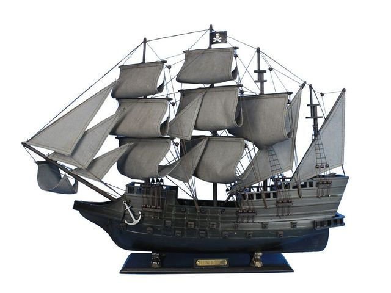

Your ship is under attack! Fire on the pirate ship!

Explanation: There are multiple divs, one that contains everything, one for each ship and one that is the water. The ships are on a loop of animation that rotate slightly and move up and down. When the 'fire cannons' button is pushed, the enemy ship has different set of animations that 'shakes' it. After that time, it goes back to the original animation. The div that is colored blue is using a different z index to be placed on top of the other divs, giving it the appearance of water.